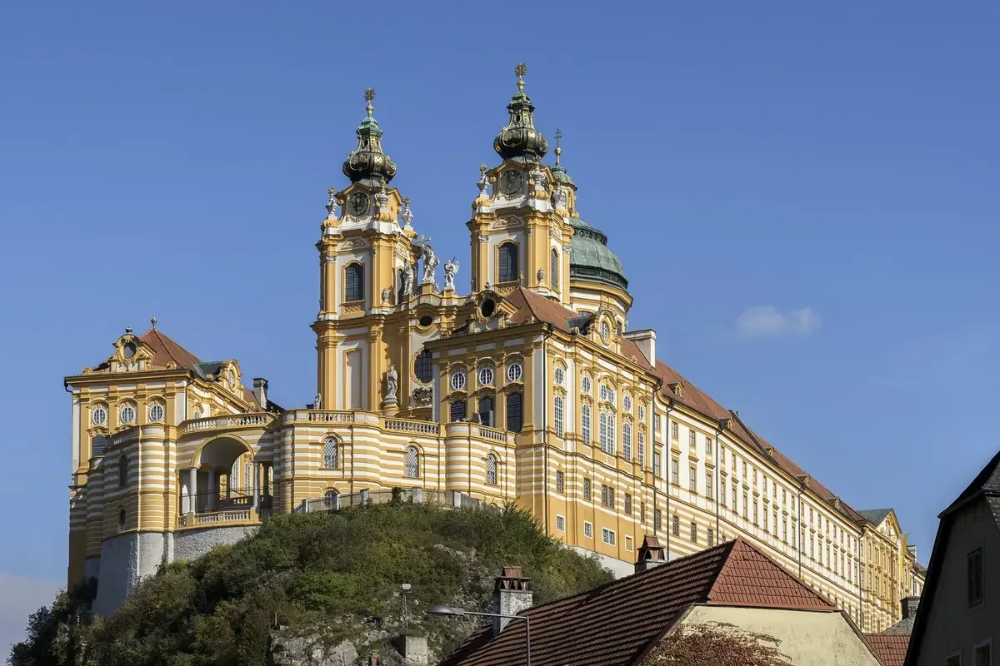
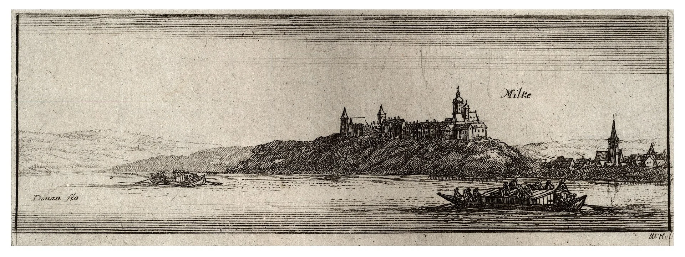
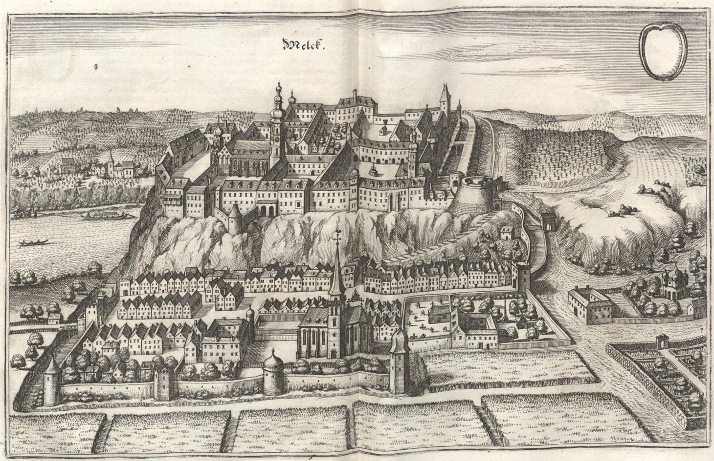
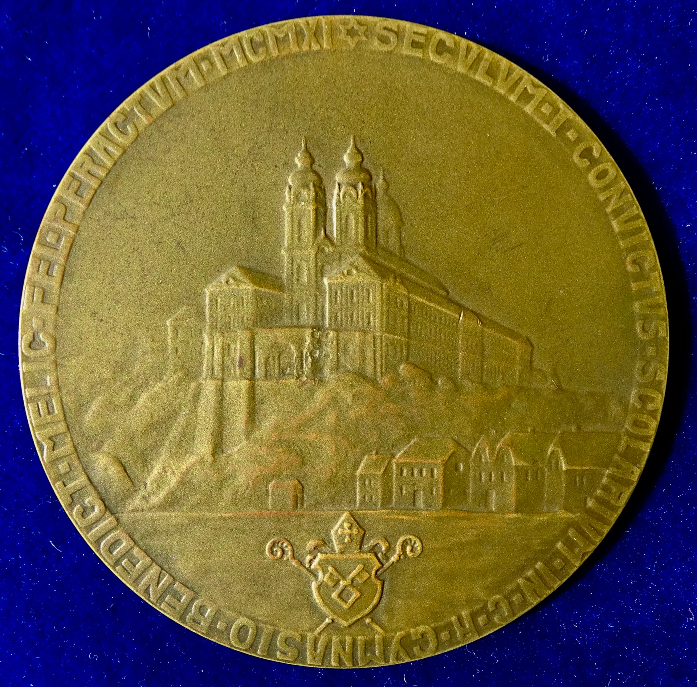
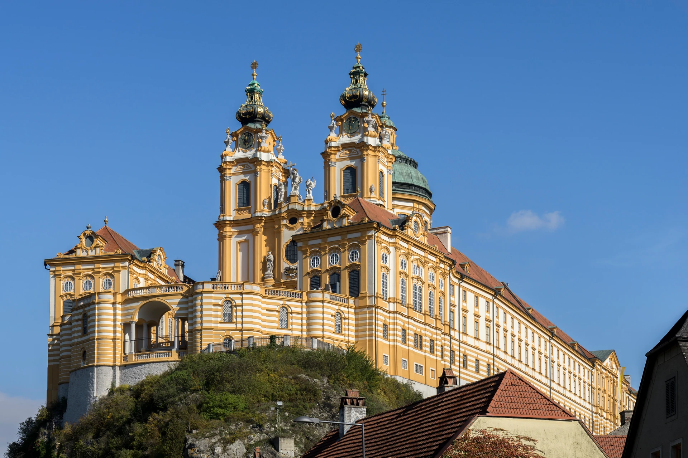
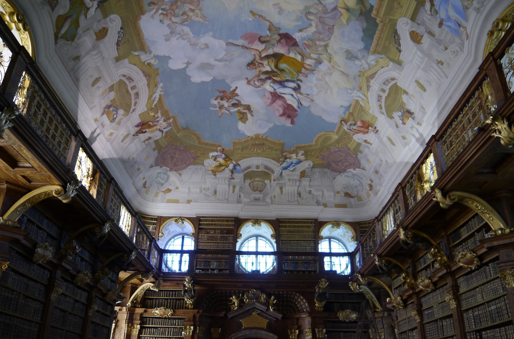
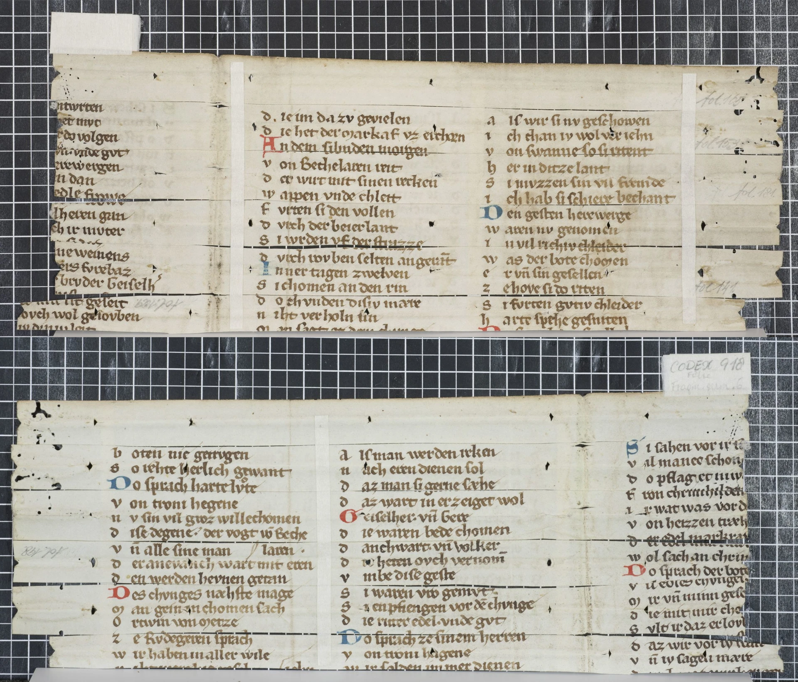

아직 펼치지 않은 카드기도하고 일하는 사람들 · 4멜크 수도원900년 넘게 수도사들이 끊이지 않고 살아온 노란 수도원이 있어요. 유명한 소설 속 젊은 수도사의 이름도 이곳에서 왔대요. 누구일까요?언덕 위의 노란 수도원이야. 900년 동안 수도사들이 살았대!
1089년부터 지금까지오스트리아 도나우강 가 멜크
멜크 수도원
도나우강 가 바위 언덕에, 1089년부터 수도사들이 끊이지 않고 살아온 수도원이 있어요. 같은 바위 위 수도원을 그린 네 때의 그림을 시간 막대로 지나가 보고, 그 안에서 지켜 온 책들을 만나 보세요.
바위 위 수도원에 900년 넘게 수도사들이 살았대. 옛날 그림부터 지금 사진까지 시간 막대를 밀어 볼까?
검수 전 시안이에요(기준서 1판 보탬 10). 수도원의 역사와 도서관은 멜크 수도원 공식 누리집을, 그림의 때는 그림을 소장·소개한 기관 자료를 따랐어요. 그림마다 수도원을 바라본 쪽이 달라서, 시간 막대의 글에 그렇다고 적었어요. 상상은 ‘눈 감고 상상해 보기’에만 썼어요.
시안 확인용카드 단계 미리 보기
1
바위 위의 900년
오스트리아 도나우강 가, 바위 언덕 위의 멜크 수도원이에요. 1089년 3월 21일, 레오폴트 2세 변경백(나라의 동쪽 끝을 지키던 영주)은 이 바위 위의 성과 성당을 베네딕도회의 첫 원장 지기볼트와 수도사들에게 내주었어요. 수도사들은 람바흐 수도원에서 왔어요.
그 뒤로 이 바위에는 수도사들이 끊이지 않고 살았어요. 아래 시간 막대를 밀어, 같은 바위 위 수도원이 어떻게 바뀌었는지 지나가 보세요. 그림마다 바라본 쪽이 조금씩 달라요.
시간 막대를 밀거나 해를 눌러, 바위 위 수도원의 네 때를 지나가 보세요.




17세기 · 벤첼 홀라르, 「멜크」(17세기, 그림 속 이름은 ‘Milke’). 도나우강에서 바라본 모습이에요 · 그림: 벤첼 홀라르(1607~1677) · 퍼블릭 도메인 · 위키미디어 공용1649년 · 마테우스 메리안 펴냄, 『오스트리아 지방 지리책』(1649년 처음 펴냄)의 멜크. 마을 쪽에서 내려다본 모습이에요 · 그림: 마테우스 메리안 · 글: 마르틴 차일러 · 퍼블릭 도메인 · 위키미디어 공용1911년 · 멜크 수도원 학교 기숙사 100주년 메달(1911, 지름 60mm) · 사진: Berlin-George · 퍼블릭 도메인 · 위키미디어 공용2017년 · 서쪽에서 본 멜크 수도원, 2017년 · 사진: Thomas Ledl · CC BY-SA 4.0 · 위키미디어 공용
네 때를 다 지나왔어요. 수도원의 모습은 바뀌었지만, 1089년부터 이 바위 위의 기도는 끊이지 않았어요.
어려운 때도 있었어요. 1297년에는 불이 났지만, 수도원의 연대기와 「멜크의 마리아 노래」는 살아남았어요. 16세기 종교개혁 때는 사제 셋과 다른 수사 다섯, 모두 여덟 명만 남아 수도 생활이 거의 멈출 뻔했어요.
18세기 후반 황제 요제프 2세가 많은 수도원을 없앨 때도, 멜크는 마을 성당들을 맡아 돌보고 있어서 살아남았어요.
바위 위 수도원에 900년 넘게 수도사들이 살았대. 시간 막대를 밀어 볼까?
물어보기옛 그림이랑 지금 사진에서 달라진 걸 찾아볼래?
2
책을 지키는 방
수도원 도서관에는 책이 10만 권 넘게 있어요. 손으로 베껴 쓴 사본이 1,800권, 인쇄술이 처음 나온 무렵(1500년 전)에 찍은 책이 750권이에요.
사진 속 큰 방과 그 옆의 작은 방은 1735년에 꾸몄어요. 두 방에서 1만 6천 권쯤을 볼 수 있어요. 1768년에는 위층에 도서관 방 둘을 더 들이고 나선 계단으로 이었어요.

지금 도서관은 큰 손질을 받고 있어요. 2025년 10월부터 큰 방의 책 1만 권쯤과 작은 방의 책 6천 권쯤을 다른 곳으로 옮겼고, 2026년 봄에는 천장화를 손봤어요. 방 공사는 2027년 말까지, 전체 복원은 2032년까지 이어져요. 공사 중에도 도서관은 열려 있지만, 몇몇 곳은 온전히 보기 어려워요.
책이 10만 권도 넘게 있대! 손으로 베껴 쓴 책만 1,800권이야.
물어보기책 한 권을 손으로 다 베껴 쓰려면 얼마나 걸릴까?
3
책을 묶던 띠 속의 노래
옛사람들은 귀한 양피지를 버리지 않았어요. 쓰지 않게 된 책장을 잘라, 다른 책을 묶을 때 띠로 쓰는 일이 흔했어요.
멜크 도서관에서는 그렇게 잘린 띠들 속에서 「니벨룽의 노래」 사본의 한 장이 나왔어요. 13세기 끝 무렵에 쓴 것이고, 1998년에 찾은 새 조각이에요.

「니벨룽의 노래」는 1200년 무렵 도나우강 언저리에서 글로 적힌 영웅 이야기예요. 사본과 조각을 합쳐 35개쯤이 남아 있어요.
사진은 띠들을 다시 이어 맞춘 한 장의 앞면(위)과 뒷면(아래)이에요. 책을 묶던 동안 생긴 구멍 자국이 띠마다 남아 있어요.
책을 묶는 띠로 옛날 노래책을 잘라서 썼대. 그 띠를 다시 이어 맞췄어!
물어보기잘린 종이를 다시 이어 맞추면 무엇이 보일까?
눈 감고 상상해 보기
도나우강을 내려가는 배 위예요. 강물이 굽이를 돌자 오른쪽 언덕 위로 노란 벽과 쌍둥이 탑이 솟아요. 900년 전 이 바위를 처음 오르던 수도사들도 이 강을 보았겠지요. 탑에서 종이 울리면, 오늘도 누군가 하던 일을 내려놓고 기도하러 가요. 도서관의 책들은 그 소리를 들으며 또 하루를 지나요.
눈을 감아 봐. 배를 타고 강을 내려가. 언덕 위에 노란 수도원이 보여. 종이 땡그랑 울려!
나의 자리
처음 본 노란 수도원이에요. 1089년 수도사들이 처음 올라온 그 바위가, 지금도 저 벽 아래에 그대로 있어요.
나는 무엇을 오래 지키며 살아가고 싶나요? 내가 다음 사람에게 넘겨줄 ‘책’은 무엇일까요?
오래오래 간직하고 싶은 책이 있어?
마음에 닿는 한 줄을 고르거나 직접 써 보세요. 한 줄을 남기면 이 자리의 도장이 찍혀요. 이 기기에만 저장돼요.
더 깊이
궁금한 칸만 펼쳐 읽어도 괜찮아요.
알고 보면
콜로만 성인 멜크 수도원의 수호성인이에요. 동쪽 변경 땅의 수호성인이기도 했고, 초기 변경백 몇 명과 함께 이곳에 묻혔어요.
1160년의 학교 수도원 학교는 1160년까지 거슬러 올라가요. 1787년 장크트푈텐으로 옮겨 갔다가 1804년 돌아왔고, 20세기 후반부터는 여학생도 받아요.
멜크 개혁 1414~1418년 콘스탄츠 공의회 무렵, 멜크는 오스트리아와 남부 독일 수도원들을 새롭게 한 ‘멜크 개혁’의 중심이 되었어요.
원장이자 대학 총장 수도원을 새로 지은 디트마이어 원장은 1706년 빈 대학 총장이 되었고, 1728년에는 황제의 고문이 되었어요.
위험했던 1938년 이해부터 멜크는 늘 없어질 위험 속에 있었어요. 수도사들은 체포 위협을 받았고, 학교를 빼앗기고 방들이 압수되었어요. 전쟁 뒤 마우루스 원장이 수도원을 다시 손봤어요.
소설 속 수도사 움베르토 에코의 소설 『장미의 이름』에서 이야기를 들려주는 젊은 수도사의 이름이 ‘멜크의 아드소’예요.
함께 보면 좋은 카드 1,200년 전 수도원 설계도(장크트갈렌), 흩어진 큰 교회(클뤼니) 이야기도 이 세트에 있어요.
기록마다 다른 점
책은 몇 권? 수도원 누리집의 도서관 소개는 ‘약 10만 권’, 관람 안내 쪽은 ‘13만 권’이라고 적어요. 두 쪽 모두 사본 1,800권과 초기 인쇄본 750권은 같아요.
직접 가 보기
확인한 날 · 2026년 11월 18일 · 바뀌기 쉬운 정보라 정기적으로 다시 확인해요
멜크 기차역에서 걸어서 갈 수 있어요. 도서관은 2027년 말까지 방마다 차례로 공사를 해서, 가는 때에 따라 일부를 온전히 보기 어려울 수 있어요. 여는 때와 관람 안내는 수도원 누리집에서 확인해 주세요.
네 때를 지나오기 금박
시간 막대로 네 때를 모두 지나오면 금박이 입혀져요.
시간 막대로 네 때를 다 지나오기
900년을 끝까지 채색
아이와 함께 끝까지 보면 카드가 채색돼요.
아이와 함께 ‘영화처럼 보기’를 끝까지 보기
근거 보기 (9)
- 멜크 수도원 공식 누리집 첫 쪽 — 1089년부터 베네딕도회 수도사들이 끊이지 않고 살며 일함, 유럽에서 가장 크고 아름다운 바로크 건물 가운데 하나
- 멜크 수도원 공식 누리집 「역사」 — 976년 바벤베르크, 1089년 3월 21일 레오폴트 2세가 성과 성당을 첫 원장 지기볼트에게, 람바흐에서 온 수도사, 콜로만 성인, 1160년 학교, 1297년 불과 연대기·마리아 노래, 1414~1418년 멜크 개혁, 1429년 성당 봉헌, 종교개혁 때 사제 셋·신학생 셋·평수사 둘, 1700년 디트마이어 원장과 프란타우어·로트마이어·트로거, 1706년 빈 대학 총장·1728년 황제 고문, 1738년 불과 탑, 1739년 디트마이어 죽음, 요제프 2세 때 본당 사목으로 살아남음, 1783·1787·1804년 학교, 1938년, 마우루스 원장, 1960년 관광객과 38만 명, 여학생
- 멜크 수도원 공식 누리집 「멜크 수도원 도서관」 — 약 10만 권, 사본 1,800권, 초기 인쇄본 750권, 1735년에 꾸민 두 방에서 1만 6천 권쯤, 1768년 위층 방 둘과 나선 계단, 2022~2032년 복원
- 멜크 수도원 공식 누리집 관람 안내 「도서관」 — 13만 권·사본 1,800권·초기 인쇄본 750권, 2025년 10월부터 큰 방 약 1만 권·작은 방 약 6천 권을 옮김, 2026년 1~4월 천장화 손질, 2026~2027년 방 공사, 2032년까지 복원, 공사 중에도 열림
- 앤 새크리, 「홀라르와 책의 예술」(토론토 대학 토머스 피셔 희귀본 도서관 강연, 2006) — 1636년 아룬델 백작을 만남, 사절단의 라인강·도나우강을 따라 빈과 프라하까지의 여행을 그림으로 기록, 그 그림들이 남아 있음
- 영국 왕실 소장품(RCT) 『오스트리아 지방 지지』 — 1649년 처음 펴냄, 마르틴 차일러의 글, 메리안의 동판화
- 위키미디어 공용 파일 설명(API로 확인): 멜크 수도원 학교 기숙사 100주년 메달(1911, 지름 60mm, 1811년 라이베르거 원장이 기숙사를 세움) · 「니벨룽의 노래」 사본 W(멜크 수도원 도서관 Fragm. germ. 6), 13세기 4분기, 띠로 잘려 묶는 띠로 쓰였고 다시 맞춤, 위 앞면·아래 뒷면 · 홀라르 「멜크」 · 2017년 서쪽 사진
- 오스트리아 포럼(AEIOU) 「니벨룽의 노래」 — 1200년 무렵 바이에른·오스트리아 도나우강 언저리에서 적힘, 사본과 조각 35개, 1998년 멜크 수도원 도서관에서 새로 찾은 조각
- 마르부르크 대학 보도자료(2019년 7월 24일) — 잘린 책장을 라틴어 책의 묶는 띠로 쓴 것, 귀한 양피지를 다시 쓰는 흔한 방법
그림·사진·소리 출처
‘처음 만나는 기독교 문화’의 깊은 카드예요. 카드 단계와 남긴 글은 이 기기에만 저장돼요.